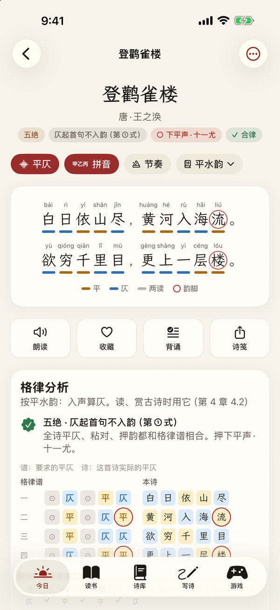
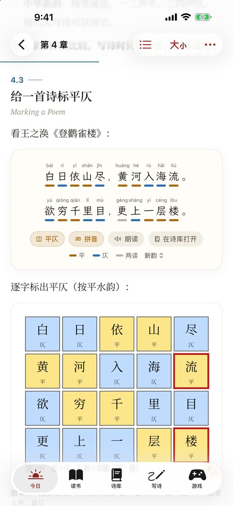
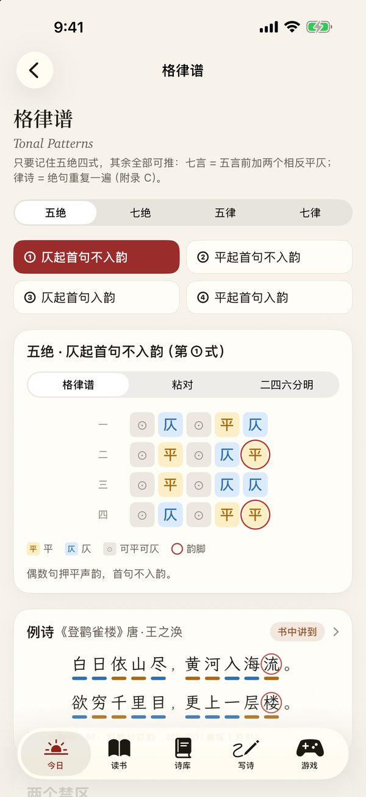
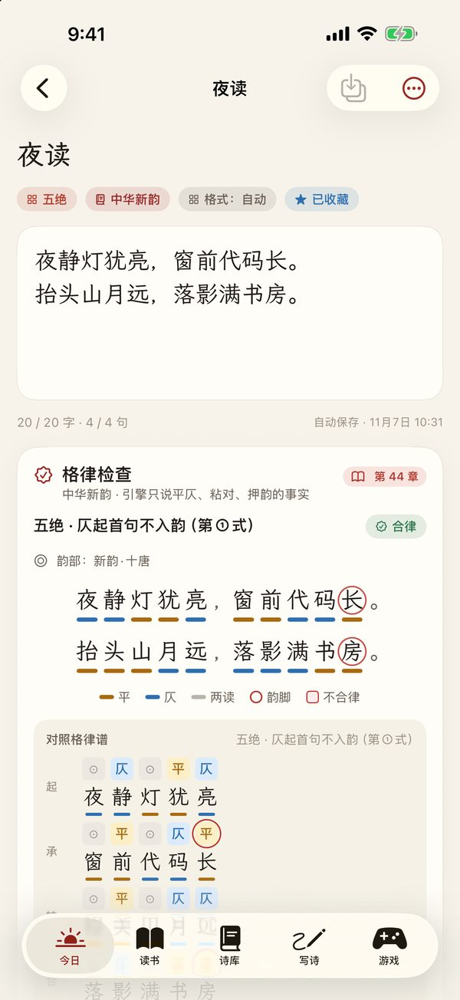
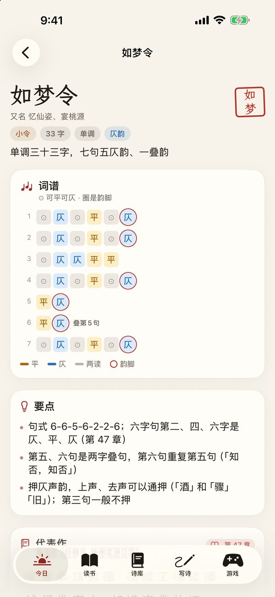
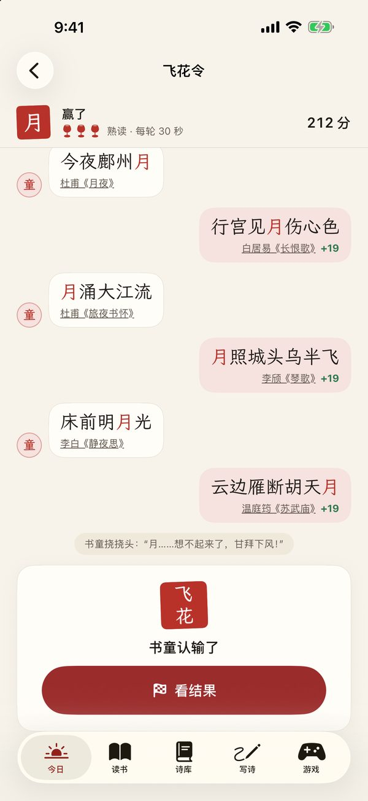
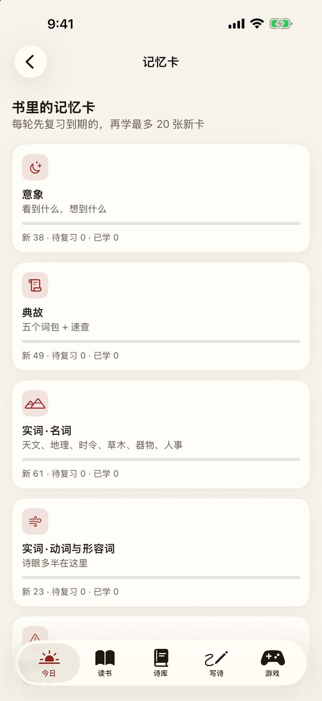
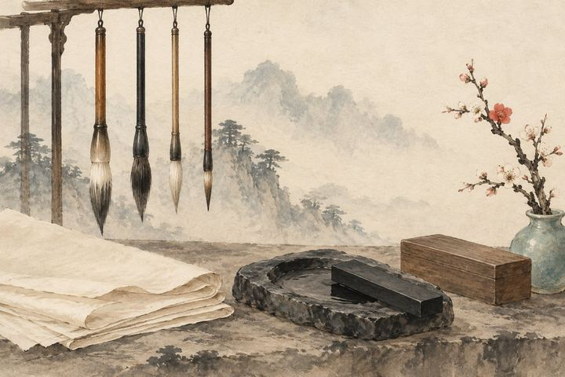
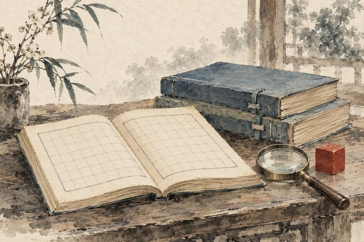

开始之前
导读
- 0全书导读免费
iPhone · iPad离线可用无广告，不用注册
从赏析到创作
「白日依山尽，黄河入海流。」为什么读起来这么顺？哪个字是平，哪个字是仄，韵押在哪里？
一本从意象、平仄讲到填词作赋的书，做成了能读、能玩、能写的 App——读懂一首诗，再写出自己的第一首。
免费下载：导读、第一部分和 8 个附录全文可读，诗库、格律检查、填词都能用 · 完整版一次买断 · App 只有中文

全书 51 章加 8 个附录，从「诗为什么动人」讲起，经过意象、意境、字词，一路读到诗经、楚辞、汉赋、唐诗、宋词、元曲和现代诗。书里讲到的每一首诗，都能点开看逐字平仄。


写诗台照书里第五部分的步骤来：找一个真实的瞬间，列意象，选格律、选韵，打草稿，再一遍遍修改。每一个字写下去，格律检查都会逐字核对。


12 个游戏都连着书里的知识点：和书童轮流说出含同一个字的诗句，给《声律启蒙》的上下联配对，十句诗逐字标出平仄。


第 4 章讲平仄用的就是这首诗。在 App 里，每首诗都能这样逐字看平仄、拼音和韵脚，点一下就朗读。
登鹳雀楼唐 · 王之涣
bái白仄rì日仄yī依平shān山平jǐn尽仄，
huáng黄平hé河平rù入仄hǎi海仄liú流平。
yù欲仄qióng穷平qiān千平lǐ里仄mù目仄，
gèng更仄shàng上仄yī一仄céng层平lóu楼平。
平平声 仄仄声 流韵脚 · 五绝 · 仄起首句不入韵（第①式） · 韵部 下平声·十一尤（平水韵）
五个部分，对应五个学习阶段：先知道诗好在哪，再攒字词、读意境、走一遍各种体裁，最后动手写。附录是写诗时随手要查的表。
开始之前
第一部分

第二部分
第三部分
第四部分
第五部分

附录
下载免费，免费部分就够读上一阵子。觉得有用，再一次买下整本书——不是订阅，不会自动续费。
$0下载就能用，不用注册
$4.99一次买断，不是订阅 · 各地区以 App Store 显示的当地价格为准
始终免费：诗库全部诗词（平仄、拼音、朗读、背诵）、诗歌史年表、格律谱、格律检查、30 个词谱填词、对联工坊、韵书、意象库、作品集、词汇本、搜索、书签笔记、学习进度、备份与 iCloud 同步。
iPhone 或 iPad，系统需要 iOS / iPadOS 26 或更新版本。App 的界面和内容都是中文。
都不用。全部内容装在 App 里，离线可用，没有广告。阅读进度和你写的诗只保存在你的设备和你自己的 iCloud 里，开发者看不到，也不收集任何数据。
平水韵按古音分 106 部，很多入声字（如「白」「月」「国」）普通话读平声，在平水韵里却算仄声；中华新韵按普通话声调分 14 部。读古诗看平水韵，自己写诗两种都可以，App 里随时切换。
在。用同一个 Apple ID 登录，打开「设置 → 完整版 → 恢复购买」即可；家人共享里的家庭成员也能用。
更多问题请看 支持页，或写信到 dongxiyunei@gmail.com